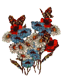
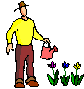

Songlist!
When trying to prepare sets and shows,
I tried making an open office calc spreadsheet
but it was kind of tedious navigaring the tables,
so I made this list instead!
Feel free to use these infos to DJ or Remix my songs!
Just contact me if you wanna do it commercially!
✧˖°. List Options .°˖✧
This was helpful for my Live stuff!
There is still some stuff missing from this List though!
Albums missing:
Is this thing on?, Step by Step
EPs missing (main ones):
Quirks Rule, Laminar Flow, I Remixed some stuff
If you need any more info or assets, feel free to contact me!
Song Stems can be found here!
So many songs! Take a break and smell the flowers:

